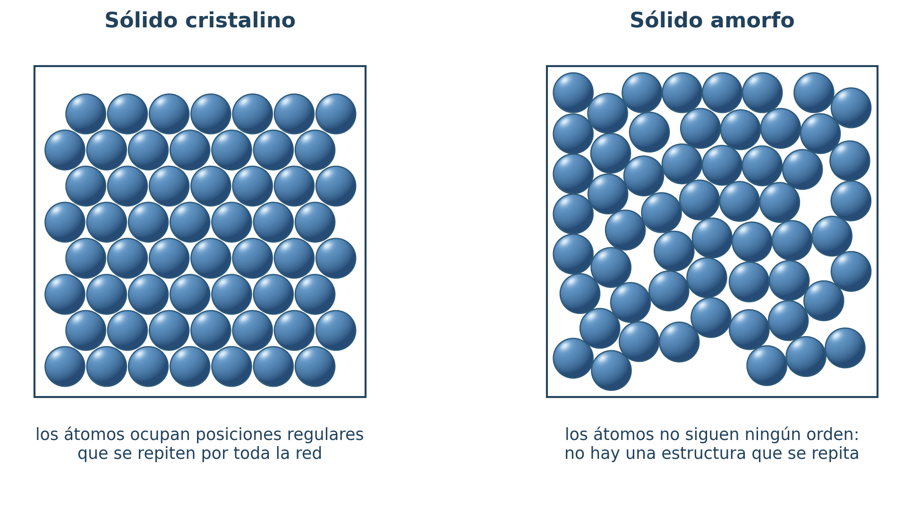
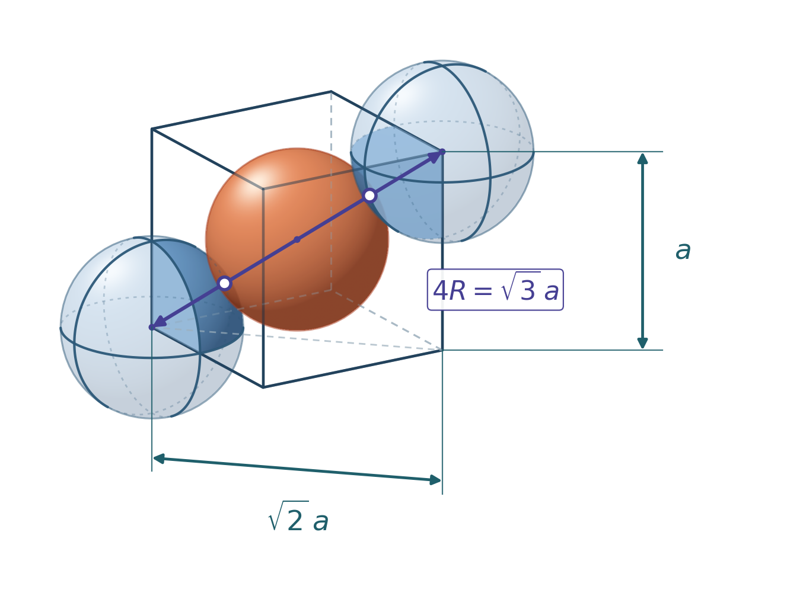
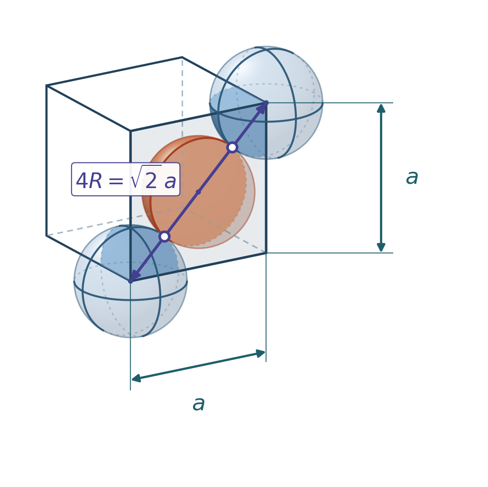

Muchas propiedades de un material —la densidad, el punto de fusión, la facilidad para deformarse— no se explican mirando la pieza, sino mirando cómo están colocados sus átomos. En este apartado vamos a describir esa colocación y, sobre todo, a calcular a partir de ella: con la geometría de la red y el radio de un átomo se puede deducir la densidad del material sin pesarlo.
Para qué sirve este apartado
Es la base del bloque de ensayos: un material dúctil y uno frágil se diferencian, en el fondo, en cómo se mueven los planos de átomos de su red. Y en la prueba de acceso a la universidad la estructura interna se usa para contextualizar, pero el cálculo de la celda —número de átomos, constante reticular y densidad— sí aparece como problema numérico.
Sólidos amorfos y sólidos cristalinos
En un sólido amorfo las partículas carecen de una estructura ordenada; el vidrio es el ejemplo típico. En los sólidos cristalinos, en cambio, los átomos se disponen de manera regular y ordenada formando redes cristalinas. Los metales son cristalinos.

Las redes cristalinas tienen una estructura básica que se repite por toda la red. Analizando esa estructura básica se puede comprender el comportamiento del material a nivel macroscópico e incluso calcular algunas de sus propiedades.
2.1. La celda unitaria
La estructura mínima que se repite en una red cristalina se denomina celda unitaria. Según su geometría, las propiedades del material serán unas u otras. Aunque hay muchas celdas posibles, el 90 % de los metales cristaliza en alguna de estas tres. Cámbialas con las pestañas.
Cúbica centrada en el cuerpo (BCC)
Del inglés Body-Centered Cubic. La celda es un cubo con un átomo en cada vértice más otro en el centro del cubo. Cristalizan en BCC el Li, Na, K, Cr, Fe(α), Ba, V y W.
Los átomos de los vértices pertenecen a varias celdas a la vez: de cada uno sólo entra en esta celda 1/8. Súmalo al átomo central, que sí está entero, y salen los 2 átomos por celda. Gira el modelo en la vista «solo interior» para verlo.
Cúbica centrada en las caras (FCC)
Del inglés Face-Centered Cubic. La celda es un cubo con un átomo en cada vértice más otros seis, uno en el centro de cada cara. Cristalizan en FCC el Al, Cu, Au, Ir, Pb, Ni, Pt y Ag.
Los átomos de las caras aportan media esfera a esta celda y la otra media a la celda contigua: 6·½ + 8·⅛ dan los 4 átomos por celda. Es la red más compacta de las tres junto con la HCP.
Hexagonal compacta (HCP)
Del inglés Hexagonal Close-Packed. La celda es un prisma de base hexagonal con un átomo en cada vértice, uno en el centro de cada cara hexagonal y otros tres en el interior. Cristalizan en HCP el Be, Cd, Mg, Ti, Zn y Zr.
Los tres átomos del interior del prisma no caben enteros, pero lo que les falta entra desde las celdas de alrededor, así que a efectos de contar materia se computan completos: 2·½ + 12·⅙ + 3 dan 6 átomos por celda.
Alotropía
Un mismo elemento puede cambiar de red cristalina al variar la presión o la temperatura: es lo que se llama alotropía o polimorfismo. El hierro, por ejemplo, es BCC a temperatura ambiente pero pasa a FCC entre 912 °C y 1394 °C. Como la FCC es más compacta, ese cambio modifica la densidad y la capacidad del hierro para disolver carbono, que es precisamente la base de los tratamientos térmicos del acero.
2.2. Valores característicos de la celda
Para comparar materiales y calcular sus propiedades se manejan siempre los mismos seis valores de la celda unitaria.
| Símbolo | Magnitud | Cómo se obtiene |
|---|---|---|
| n | Número de átomos por celda | Átomos completos que pertenecen a la celda, contando de cada uno su fracción: un vértice de un cubo aporta 1/8; el centro de una cara, 1/2; uno interior, 1 |
| Va | Volumen atómico de la celda | \(V_{a}=n\cdot\frac{4}{3}\pi R^{3}\), tratando los átomos como esferas de radio R |
| m | Masa de la celda | \(m=\frac{n\cdot m_{at}}{N_{A}}\), con NA = 6,022·1023 |
| a | Constante reticular o parámetro de red | Arista de la celda, en función del radio atómico. Depende de la red (ver pestañas) |
| i | Índice de coordinación | Número de átomos tangentes a otro. Si varía según la posición, se toma el mayor |
| FE | Factor de empaquetamiento | \(FE=V_{a}/V\). No depende del tamaño de los átomos, sólo de la geometría |
Los tres primeros se calculan igual en cualquier red; la constante reticular y el factor de empaquetamiento dependen de la geometría de cada una:
BCC
El átomo central está entero dentro de la celda y cada uno de los 8 vértices aporta 1/8:
\[n=1+8\cdot\frac{1}{8}=1+1=2\]El índice de coordinación es i = 8, el del átomo central. Las esferas son tangentes a lo largo de la diagonal del cubo, que mide 4R:

De la geometría de la diagonal de un cubo en función de su lado se deduce que:
\[a=\frac{4\cdot R}{\sqrt{3}}\]El volumen de la celda es el de un cubo, V = a3, y el factor de empaquetamiento resulta:
\[FE=\frac{V_{a}}{V}=\frac{n\cdot \frac{4}{3}\pi R^{3}}{(\frac{4R}{\sqrt{3}})^{3}}=\frac{8\sqrt{3}\pi}{64}\simeq 0{,}68\]FCC
Los 6 átomos de las caras aportan media esfera y los 8 vértices, 1/8 cada uno:
\[n=6\cdot \frac{1}{2}+8\cdot\frac{1}{8}=3+1=4\]El índice de coordinación es i = 12, el de los átomos de los centros de las caras. Aquí la tangencia se produce a lo largo de la diagonal de cada cara:

HCP
Los 2 átomos de las caras hexagonales aportan media esfera, los 12 vértices 1/6 cada uno y los 3 átomos interiores se cuentan enteros:
\[n=2\cdot \frac{1}{2}+12\cdot\frac{1}{6}+3=1+2+3=6\]El índice de coordinación es i = 12. La constante reticular es el lado del hexágono, donde las esferas son tangentes, y la altura del prisma se deduce imponiendo que las esferas interiores sean tangentes a las de las bases:
\[a=2 \cdot R\] \[h=\frac{2\sqrt{2}}{\sqrt{3}}a=\sqrt{\frac{2}{3}}4R\] \[V=A_{base}\cdot h=6\sqrt{3}R^{2}\cdot \sqrt{\frac{2}{3}}4R=24\sqrt{2}R^{3}\] \[FE=\frac{V_{a}}{V}=\frac{n\cdot \frac{4}{3}\pi R^{3}}{24\sqrt{2}R^{3}}=\frac{\sqrt{2}\pi}{6}\simeq 0{,}74\]| Celda | n | i | Constante reticular | FE |
|---|---|---|---|---|
| BCC | 2 | 8 | a = 4R/√3 | 0,68 |
| FCC | 4 | 12 | a = 4R/√2 | 0,74 |
| HCP | 6 | 12 | a = 2R | 0,74 |
De la celda a la densidad
Encadenando lo anterior se obtiene la densidad sin pesar nada: se cuentan los átomos de la celda, se calcula su masa dividiendo entre el número de Avogadro, se halla el volumen de la celda a partir del radio atómico y se dividen ambos.
\[\rho=\frac{n\cdot m_{at}}{N_{A}\cdot V}\]Cuidado con las unidades: si quieres la densidad en kg/m³, la masa atómica debe entrar en kg/mol y el volumen de la celda en m³.
Ejercicios de estructura interna
Ejercicios de estructura interna
La colección completa (6 problemas, con el resultado de cada uno para que puedas autocorregirte) está en el anexo de colecciones de problemas.
Acceso directo: abrir la colección en el navegador · descargar el PDF